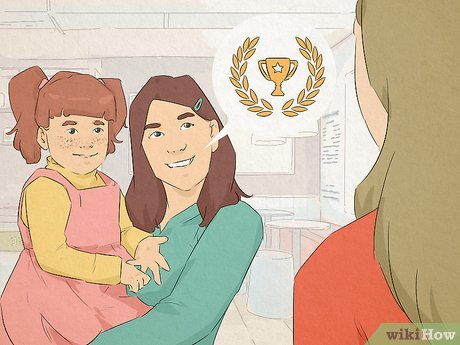
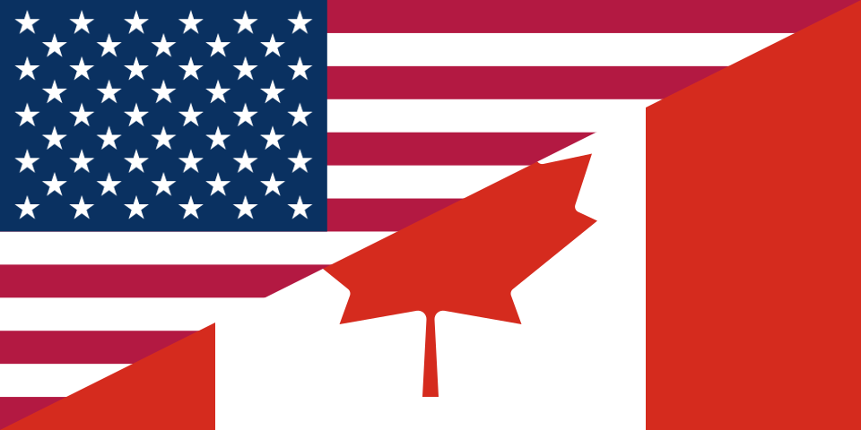

Canada
Space, nature and multiculturalism creating a unique identity.
Space, nature and multiculturalism creating a unique identity.
In Canada, maple syrup is not just a sweetener – it's a national treasure! In the spring, when sap collection begins, people flock to "sugar shacks" – rustic cabins in the woods where you can watch real maple syrup being made. And of course, you can taste it with pancakes, bacon, or even frozen on snow as a sweet treat.
Canadians love nature – whether it’s hiking in the mountains, canoeing on lakes, or camping in the middle of nowhere. Even in big cities, people constantly look for ways to spend time outdoors. In winter – skiing and ice skating, in summer – picnics and camper van trips. The more time in nature, the better!

If you say you don’t like ice hockey in Canada, you may get some very surprised looks. This sport is so important here that even babies are born "hockey fans." When important games take place, the whole country stops, and kids learn to skate and handle a hockey stick from a very young age. Canadians truly believe that hockey runs in their blood!
In Canada, it’s common to address people by their first name, even if it’s your boss, professor, or doctor. There’s no need to use formal titles or last names, as communication is seen as more friendly and less hierarchical. Even political leaders are sometimes called by their first names – in Canada, we are all equals!
Canadians love to warm up before business or work meetings by having a little "small talk" – briefly chatting about the weather, weekend plans, or even the latest ice hockey game results. This isn't just politeness – it’s a way to create a friendlier atmosphere and reduce formality. If you're in Canada and want to start a conversation, just say: "Wow, it’s cold today!" – and everything will go smoothly!

Good Friday is celebrated before Easter, a day of Christian prayer and reflection.
Victoria Day is celebrated on the last Monday in May, honoring Queen Victoria, with fireworks.
Canada Day is celebrated on July 1st, marking the country's founding, with fireworks and events.
Labour Day is celebrated on the first Monday in September, a day of rest with picnics and outdoor activities.

Thanksgiving Day is celebrated on the second Monday in October, a day of gratitude with a family dinner.

Remembrance Day is celebrated on November 11th, honoring fallen soldiers with a moment of silence and poppies.
Boxing Day is celebrated on December 26th, with sales and the tradition of gift-giving.
Here’s some often used phrases in Canada! These phrases will help you not to get lost during conversations. However, use them with cautions, because if you get carried away, it can come across as rude.
Meaning: friend, mate, buddy.
Usage: "Hey buddy, can you pass me that?"
If you say this with a friendly tone, it means "friend," but if said with some irony, it can imply dissatisfaction or even a warning.
A tip! Although "buddy" is a friendly word, not everyone likes it, especially if said to a stranger with a stern tone!
Meaning: cigarettes, cigars, to smoke.
Usage: "I’m heading out for a dart."
If someone in Canada asks "Got any darts?", they are definitely not talking about darts!
A tip! This is an informal slang term, so it's best used only among friends who understand it.
Meaning: a person who tries very hard.
Usage: "She did the extra work, she’s a keener."
If someone calls you a "keener," it can be a compliment or a friendly tease, depending on the context!
A tip! This word can be used sarcastically, especially if someone seems overly enthusiastic.
Meaning: multi-story parking garage.
Usage: "Let’s meet at the parkade near the mall."
This term is mainly used in Western Canada, while in the east, people typically say "parking garage".
A tip! If you're in Canada looking for a place to park, ask for the "parkade," not the "parking garage"—locals will understand you better!
Meaning: one-dollar coin and two-dollar coin.
Usage: "I need a loonie for the soda."
No matter how officially you say "one-dollar coin," in Canada, everyone will still say "loonie"!
A tip! These terms are so widespread that even in official contexts, people say "loonie" and "toonie" instead of "one-dollar coin" and "two-dollar coin"!
Meaning: knitted winter hat.
Usage: "It’s freezing, don’t forget your toque!"
If you say "beanie" in Canada, locals will understand, but if you want to sound like a true Canadian, say "toque".
A tip! "Toque" is pronounced like "took," not "tok" or "toak"!
Meaning: hoodie.
Usage: "It’s chilly, I’m gonna put on my bunny hug."
Unless you're in Saskatchewan, people may not understand this phrase. In other parts of Canada, say "hoodie"!
A tip! If you say "bunny hug" in other provinces, be prepared to explain what it means!
Meaning: carbonated drink (e.g., Coca-cola).
Usage: "I’ll have a pop with my burger."
In Western Canada, people mostly say "pop," while in Eastern Canada, they say "soda".
A tip! If you ask for "soda" in Canada, people will understand, but "pop" is the more common term!
Meaning: a 24-bottle beer pack.
Usage: "Grab a two-four for the long weekend!"
This is a very popular term during the "May Two-Four" – Canada’s Victoria Day weekend.
A tip! This is an informal word, so don’t use it in official contexts.
Meaning: kilometers (short ver.).
Usage: "We’ve got about 10 clicks to go."
This word is more commonly used in Canada than in the U.S.!
A tip! This term is often used by military personnel and long-distance drivers.
Meaning: small convenience stores.
Usage: "I’m heading to the dep for some milk."
Outside Quebec, people will say "corner store" or "convenience store" instead.
A tip! If you’re not in Quebec, people may not understand what you mean!
Meaning: confusion, argument, chaotic situation.
Usage: "There was a kerfuffle at the game."
This is an informal British-origin word, often used humorously or lightly.
A tip! This word is frequently used humorously to describe small dramas.


Here’s some things you should never do, if you want to blend in and avoid uncomfortable situations. Follow these tips to make a great impression!
| Don't | Why? | What to do instead? | |
|---|---|---|---|
| Boasting | Canadians value humility, and excessive boasting may be seen as rude. | Be modest and let your actions speak for you. |  |
| Comparing Canadians to Americans | Canadians take pride in their culture and do not like being compared to the U.S. | Respect Canada’s uniqueness and avoid referring to it as "North America." |  |
| Displaying Strong Emotions in Public | Canadians often avoid dramatic displays of emotions in public places. | Be polite and maintain a calm tone, even when excited. |  |
| Using the Term "Indians" Instead of "Indigenous" | "Indigenous" is the correct and respectful term. | Use "Indigenous" or the specific name of the nation, if known. |  |
| Not Admitting Your Mistakes | Canadians value accountability and sincerity. | If you make a mistake, simply apologize and try to correct it. |  |
| Bringing up Controversial Topics | Canadians often avoid confrontation and don’t like to argue about sensitive topics. | If you’re unsure whether a topic is appropriate, it’s better to avoid it. | |
| Making Jokes About Politics | While humor is important, political topics can be sensitive and may not always be suitable for jokes. | Be careful with political jokes and ensure they don’t offend others. |  |